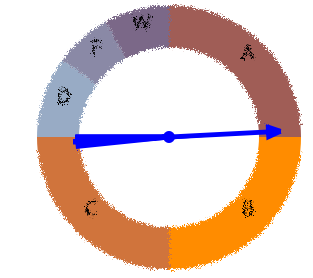

SpIntro Stats

SpIntro Stats is an open project to provide a set of simulation web apps for introductory statistics.
'Spin' in the title refers to the methods we begin with: spinners, card shuffles, mixing balls in contrast to the classical emphasis on probability axioms.
Tests are based on permutation/randomization distributions and confidence intervals are derived via bootstrapping.
This software is intended to demonstrate the concepts underlying statistical analysis.
It is not, in itself, a statistical analysis package.
We hope users find it useful, but no explicit or implicit warrantee is made for accuracy of results.
For our discussion group see the spintro-stats google group
and our code is available as a github repository
| Label | Count |
|---|---|
Spinner setup: Type as many labels (separated with commas or tabs) in the first box as percentages or probability weights in the second.
Setup: Type as many labels (separated with commas or tabs) in the first box as number of balls of the respective types in the second.
Input a probability between 0 and 1 to get back a cutoff Z score.
Input a Z score (positive or negative) to get back a probability (area under the curve).
There is a different distribution for each "degrees of freedom" value, so we have to set this first.
Then input a probability between 0 and 1 to get back a cutoff t score.
Or input a t score (positive or negative) to get back a probability (area under the curve).